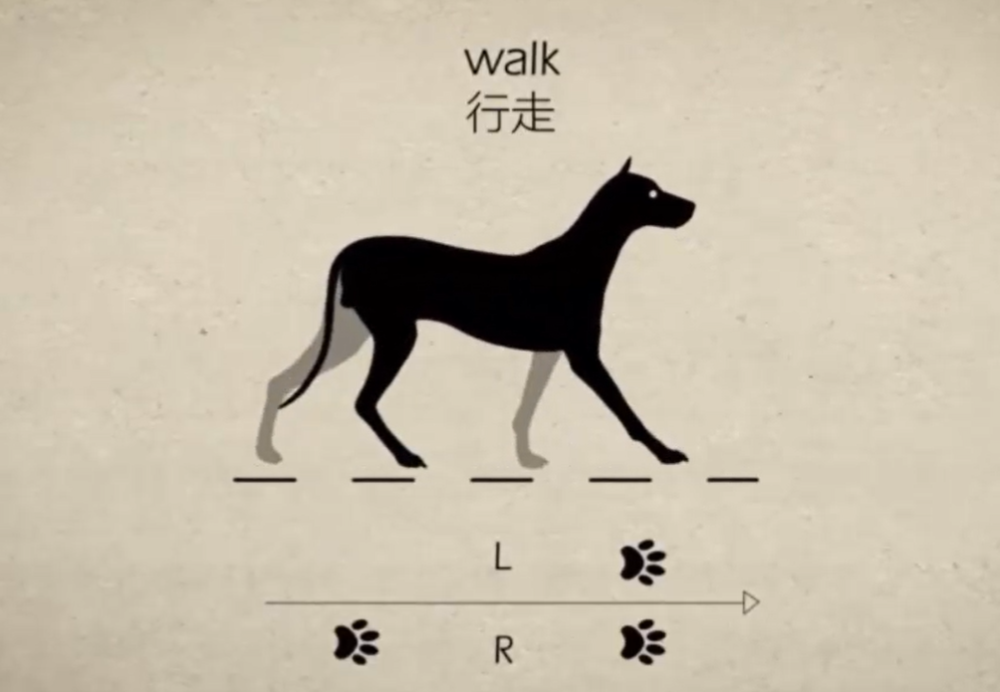
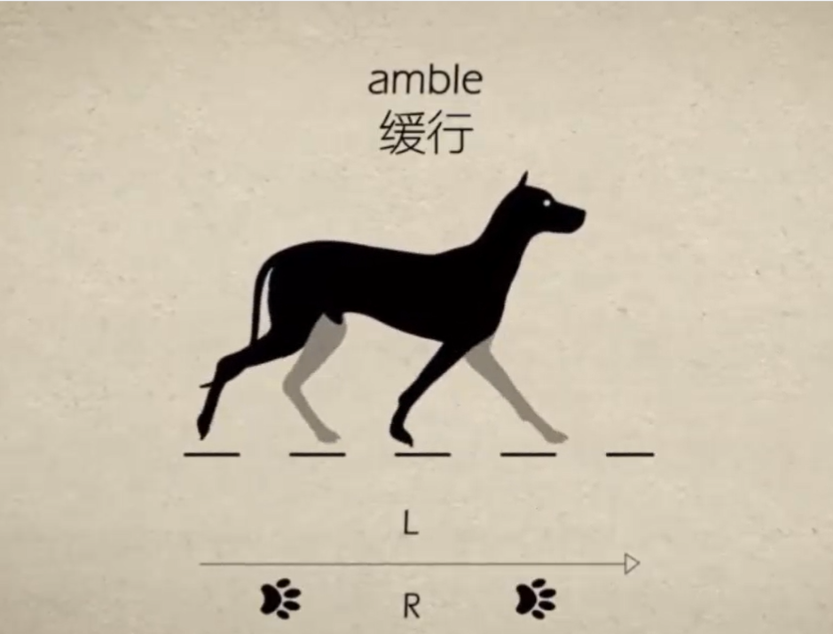
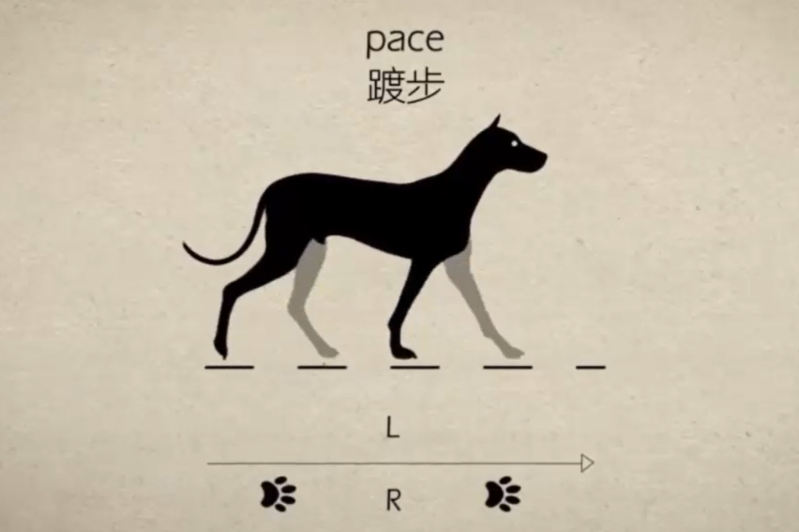
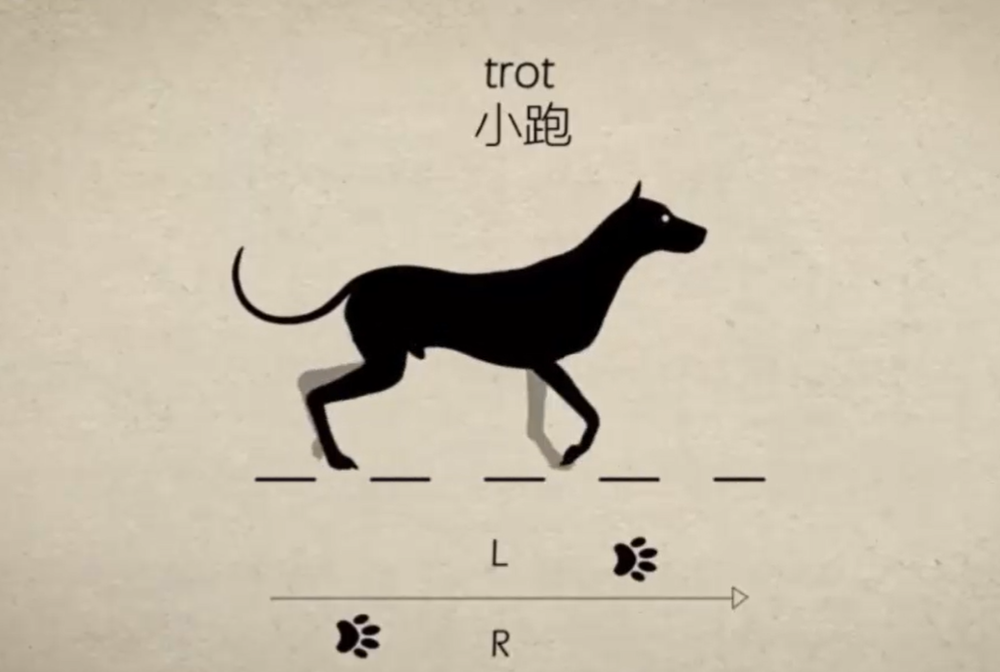
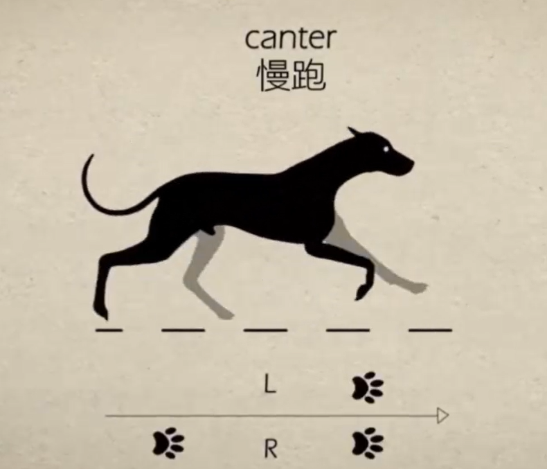
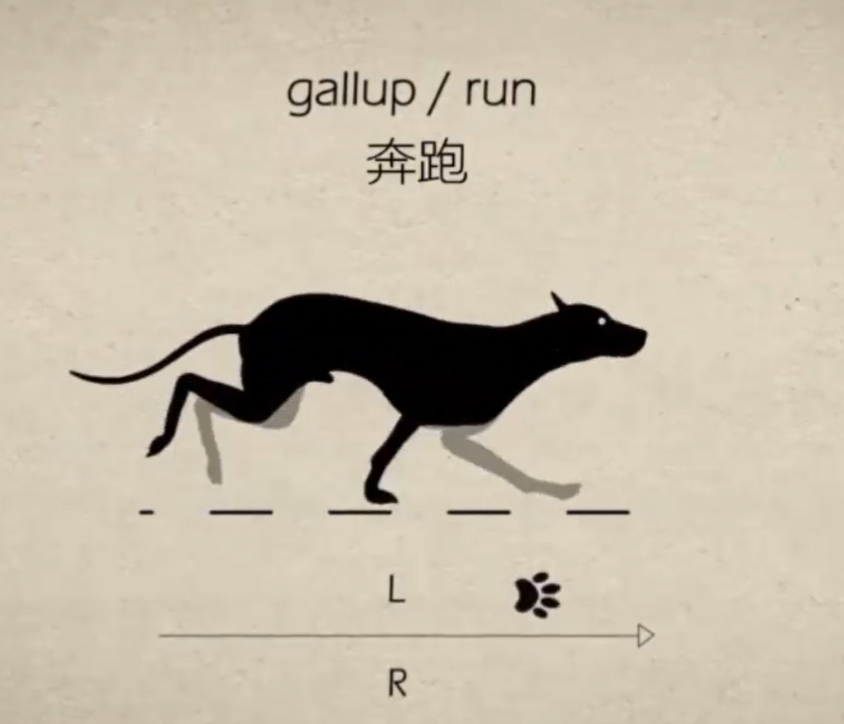
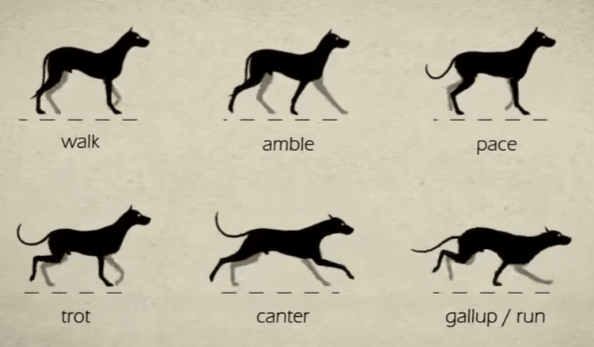
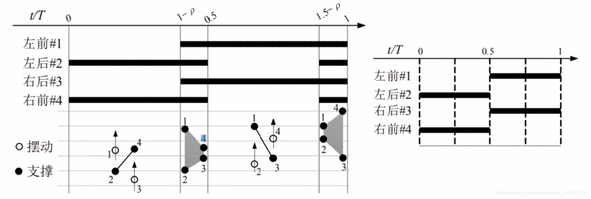

<!DOCTYPE lake>
<p data-lake-id="u76b8a52f" id="u76b8a52f"><a class="yuque-card-link" href="https://www.bilibili.com/video/BV1AY4y1b7mV" rel="noopener noreferrer" target="_blank">bookmarkInline：bookmarkInline</a></p><h2 data-lake-id="R0pd9" id="R0pd9"><span data-lake-id="ub9a66d63" id="ub9a66d63">行走</span></h2><p data-lake-id="u3b97ceee" id="u3b97ceee"></p><h2 data-lake-id="vyBqO" id="vyBqO"><span data-lake-id="uf9817aab" id="uf9817aab">缓行</span></h2><p data-lake-id="uf6526f33" id="uf6526f33"></p><h2 data-lake-id="duDNr" id="duDNr"><span data-lake-id="u4cf020d9" id="u4cf020d9">踱步</span></h2><p data-lake-id="u926e9069" id="u926e9069"></p><h2 data-lake-id="tenKw" id="tenKw"><span data-lake-id="uf95ee78d" id="uf95ee78d">小跑</span></h2><p data-lake-id="ue3587e3e" id="ue3587e3e"></p><h2 data-lake-id="Ivgsy" id="Ivgsy"><span data-lake-id="u09159ac4" id="u09159ac4">慢跑</span></h2><p data-lake-id="ufb6d74a7" id="ufb6d74a7"></p><h2 data-lake-id="J6dYZ" id="J6dYZ"><span data-lake-id="u240285a1" id="u240285a1">奔跑</span></h2><p data-lake-id="u9a0a6ef6" id="u9a0a6ef6"></p><p data-lake-id="u69e46888" id="u69e46888"><span class="lake-fontsize-12" data-lake-id="uc71644d4" id="uc71644d4" style="color: rgb(51, 51, 51)">四足机器人在奔跑时候的腾空向时间更长，次数更多。会有一个在空中飞行的状态。</span></p><p data-lake-id="uc0fedee5" id="uc0fedee5"></p><h2 data-lake-id="zNdOf" id="zNdOf"><span data-lake-id="u947bf9d5" id="u947bf9d5">相位差</span></h2><p data-lake-id="uc9cf56d8" id="uc9cf56d8"><strong><span class="lake-fontsize-12" data-lake-id="u153acad6" id="u153acad6" style="color: rgb(51, 51, 51)">相位差：不同腿之间运动超前或者滞后的差异。</span></strong></p><p data-lake-id="u1fbea8af" id="u1fbea8af"></p><p data-lake-id="ua98c2da9" id="ua98c2da9"><br/></p><p data-lake-id="udb2e690e" id="udb2e690e"><a data-lake-id="u3fa5f208" href="https://www.bilibili.com/video/BV1Ai4y1M7TR/?spm_id_from=333.788.recommend_more_video.11&amp;vd_source=9dc6a93a0c397225c749d85ea5876463" id="u3fa5f208" rel="noopener noreferrer" target="_blank"><span data-lake-id="ueb366ed7" id="ueb366ed7">https://www.bilibili.com/video/BV1Ai4y1M7TR/?spm_id_from=333.788.recommend_more_video.11&amp;vd_source=9dc6a93a0c397225c749d85ea5876463</span></a></p>